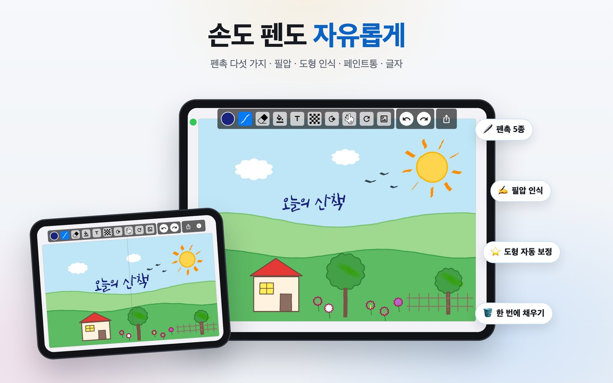
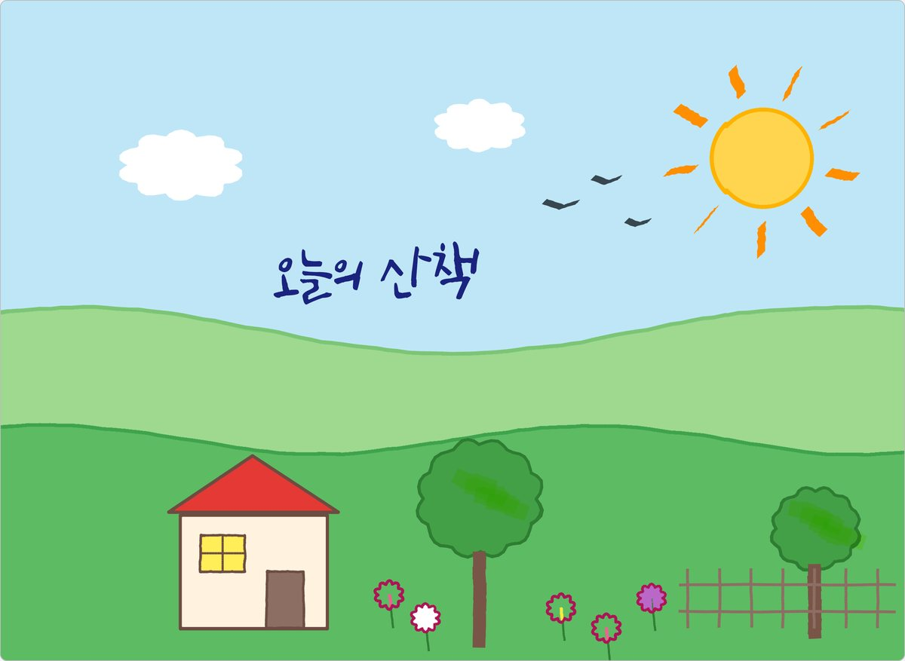
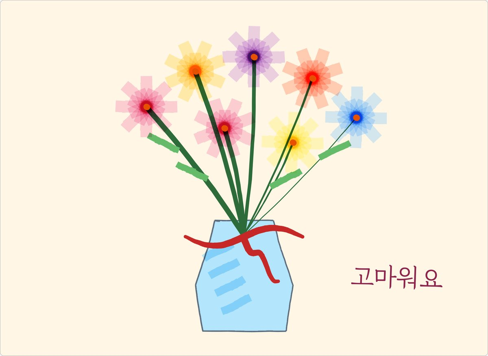
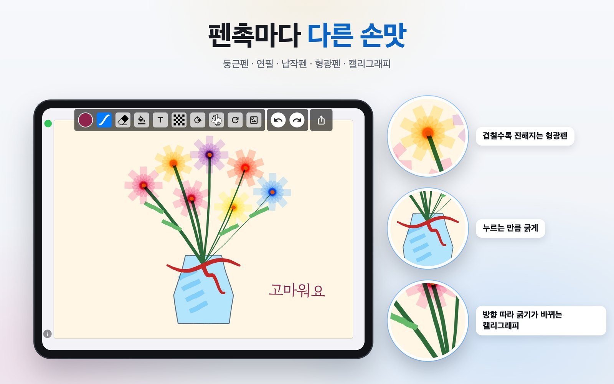
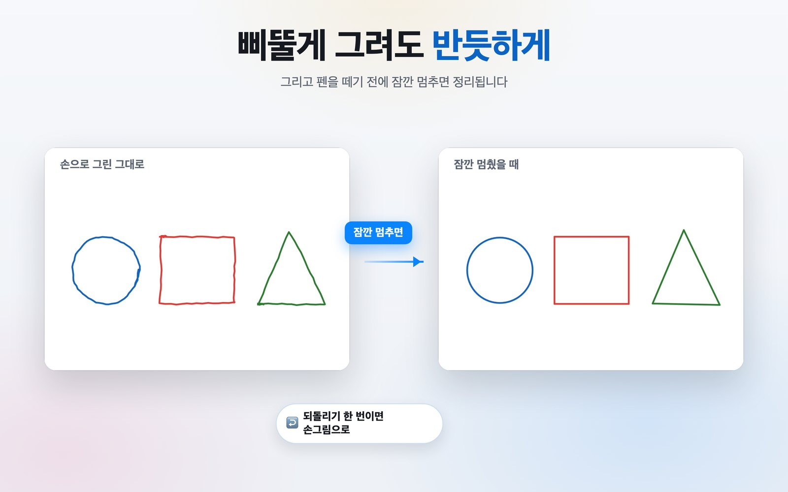
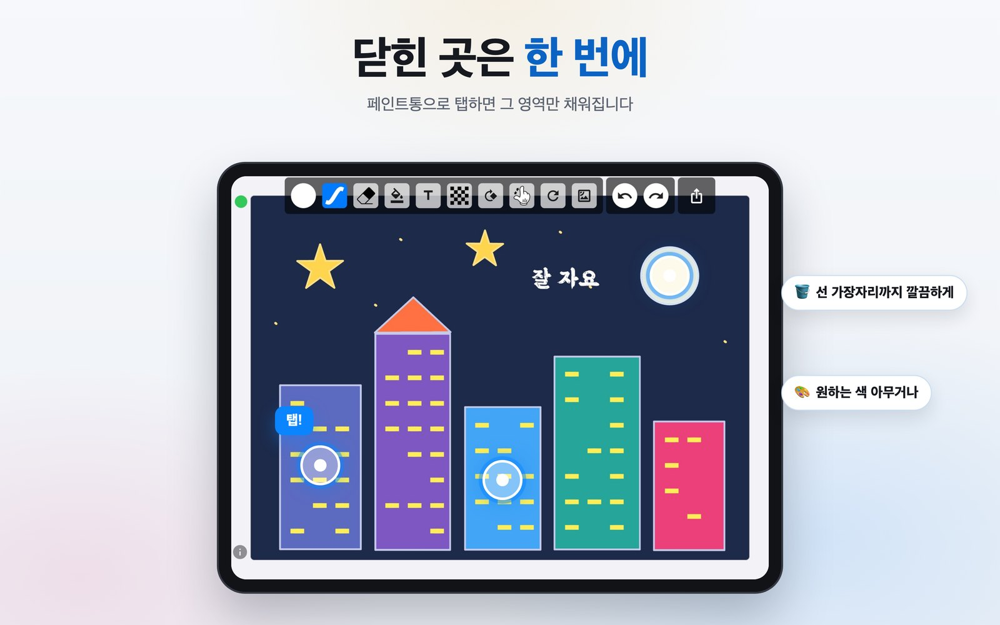
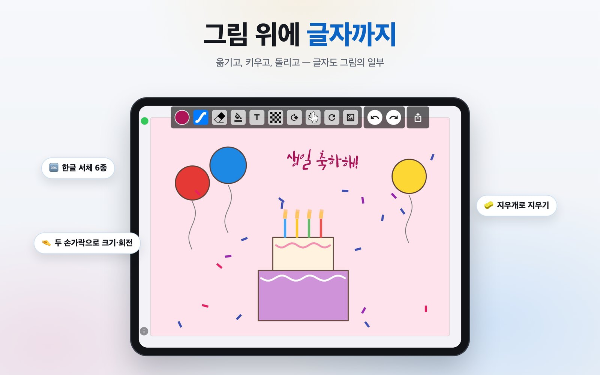
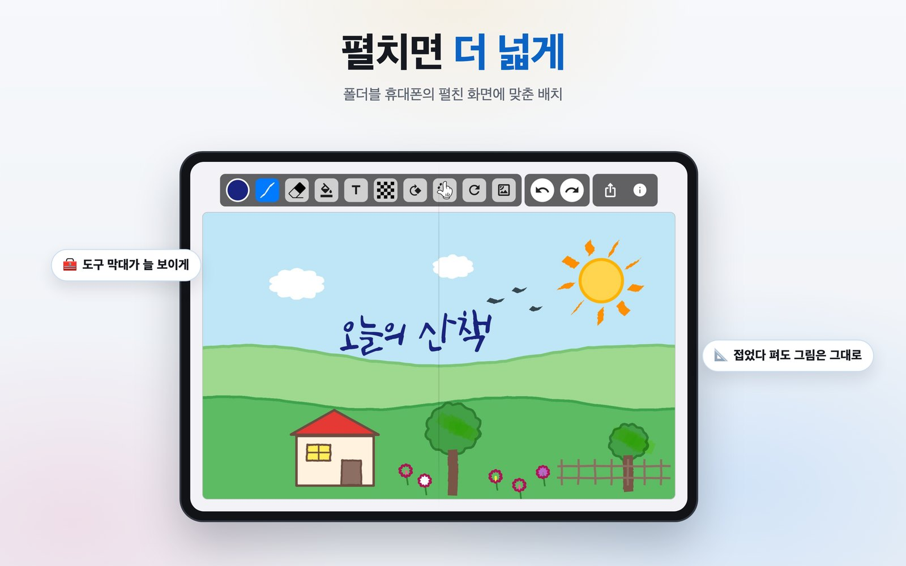

펜을 제대로 쓰는 그림판.
다섯 가지 펜촉, 애플펜슬과 S펜의 필압, 화면에 편하게 얹는 손. 삐뚤게 그린 도형은 반듯하게 정리되고, 닫힌 곳은 탭 한 번으로 칠해집니다.

그림판 프로로 그린 그림
이 앱 하나로 여기까지.
아래 그림은 모두 그림판 프로 안에서, 앱에 있는 도구만으로 그렸습니다.



둘러보기
하나씩 눌러 보세요.

정말로 다르게 그려지는 다섯 가지 펜촉
둥근펜, 연필, 납작펜, 형광펜, 캘리그래피. 형광펜은 겹쳐 그은 만큼 진해지고, 캘리그래피는 긋는 방향에 따라 굵기가 저절로 달라집니다.
- 굵기는 펜촉마다 따로 기억
- 펜촉과 굵기를 한 패널에서
- 지우개도 자기 굵기를 기억

삐뚤게 그려도 반듯하게
선, 원, 타원, 사각형, 삼각형, 별을 그린 뒤 펜을 떼기 전에 잠깐 멈추면 반듯하게 정리됩니다. 기울여 그리면 그 각도 그대로입니다.
- 되돌리기 한 번이면 손그림으로
- 일부러 구불구불 그린 선은 그대로
- 손가락으로도, 펜으로도

닫힌 곳은 한 번에 칠하기
윤곽 안을 탭하면 그 영역만 채워집니다. 채운 색은 그림 안에 고정되어 위에 덧그리거나 지울 수 있습니다.
- 탭한 자리의 색을 기준으로
- 선 가장자리까지 깔끔하게
- 되돌리기 지원

그림 위에 글자까지
한글 서체 6종과 기본 서체. 끌어서 옮기고, 두 손가락으로 벌려 키우고, 비틀어 돌립니다. 글자도 그림의 일부라 지우개로 지워집니다.
- 글자 색 따로 지정
- 두 손가락으로 크기·회전
- 지우개로 지우기

펼치면, 펼친 만큼 넓게
폴더블 휴대폰을 펼치면 도구 막대가 늘 보이고 그림판이 화면을 넓게 씁니다. 접었다 펴도 그리던 그림은 그대로입니다.
- iPhone Duo
- 갤럭시 Z 폴드처럼 가로로 넓은 화면
- 태블릿은 원래 배치 그대로
작은 것도 챙겼어요
매일 쓰기 편하게.
누르는 만큼 굵게
애플펜슬과 S펜의 필압을 읽어, 세게 누르면 굵게 살살 그으면 가늘게 그려집니다.
손을 얹고 그리기
펜이 화면에 닿아 있는 동안 손바닥 터치는 무시합니다.
원하는 색 아무거나
격자·스펙트럼·슬라이더와 헥스 입력. 그림·배경·글자 색을 따로 정합니다.
사진 위에 그리기
앨범의 사진을 배경으로 불러와 그 위에 그립니다.
돌리고 키우고
캔버스를 돌리고 확대해서 편한 각도로 그립니다.
가입 없이, 오프라인으로
계정도 로그인도 없습니다. 그림은 기기 안에만 남고, 인터넷은 광고에만 씁니다.
개인정보
그림은 기기 안에 남습니다.
업로드할 서버도, 그림을 묶어둘 계정도 없습니다. 모든 처리가 기기에서 이뤄지고, 앱을 지우면 함께 사라집니다. 앱은 무료이고 광고가 붙기 때문에 Google AdMob과 Firebase Analytics가 통상적인 광고 식별자와 기기 정보를 수집합니다. 그 내용은 전부 개인정보처리방침에 적어두었습니다.
이제 그려보세요.
App Store와 Google Play에서 무료입니다. 오프라인에서도 동작하고, 네트워크는 광고에만 씁니다.